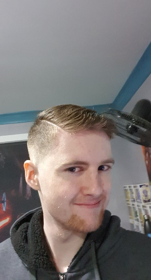
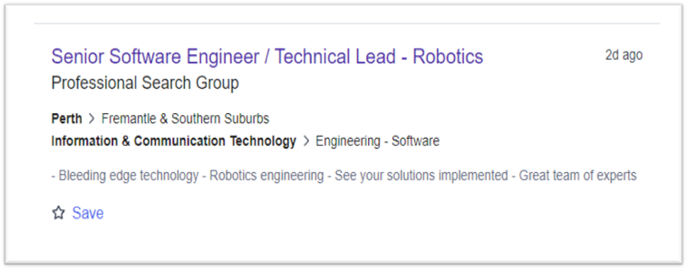
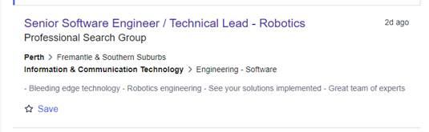

Scott Barber s3957460 s3957460@student.rmit.edu.au
Background
An Australian citizen educated at Marayong public school through K-6 and the hills sports high school for years 7-12 with an adorable Boston terrier, French bulldog mix puppy ‘shadow’
Interest in IT
My interest in IT started young when my dad introduced me to computers and video games eventually this grew into a fondness for the technology that we now surround ourselves with. I choose to come to RMIT to learn in depth into the mechanisms of both online and offline that go into the great marvels of technologies.
My ideal job is likely a job in robotics engineering, designing, and programming robots to assist humanity in doing dangerous, dirty, or demeaning jobs that would make life easier for all involved. I would require my bachelor of IT and likely a degree in engineering for this job I will also need many skills in programming and likely coordination skills with a team of people, I currently possess a keen attention to detail and great hand eye coordination which will be necessary skills in this field. I plan to acquire the information and skills needed through my tertiary studies. Picture from ‘https://www.seek.com.au/job/56322433?type=standard#sol=1d40c8658762a6cb9e23f9558dc62963db4d33f0’
Personal profile
I have a great distaste for these questionaries which all are poorly considered especially in regard to neurodivergent or mentally ill subjects, like me, and how they side-line symptoms as your ‘personality’ and lead to further demonization of the illnesses or disorders. However, my results for 3 different personality tests are as follows.
According to the Myers-Briggs test I have the personality type of ‘Mediator, INFP-T’, the scores displayed on the left for all the sub-categories and means I am vibrant and passionate whilst Idealistic and empathetic.
According to online learning style test at ‘http://www.educationplanner.org/students/self-assessments/learning-styles-quiz.shtml?event=results&A=5&V=7&T=8’ I am a Tactile learner at 40% Visual 35% and Auditory 25%
According to a Big five personality test at ‘https://www.truity.com/test-results/bigfive/17315/29070737’ I have 98% Neuroticism meaning a person’s tendency to experience negative emotions which just sounds to me like it told me I’m depressed which I knew it also scores me 73% Open 50% Conscientious 15% Extraverted and 87.l5% Agreeable.
These results mean nothing to me they are inaccurate quantifications of personality which is such a unique concept and impossible to quantify as there are an infinite system of variables that affect a person’s personality and shape it differently these results have no influence on my behaviour in a team and should not be considered when forming a team.
Overview
My project will be a video game in which you build a robot to perform tasks and as you do task the complexity of your robot and the complexity or difficulty of the task also improves. The jobs can be simple like taking out trash or driving complicated and simple vehicles for construction and transportation, and the player will have an opportunity to build edit and recreate their robot before a level.
Motivation
This project will cause me to research and gain information into the types of tasks robots could be designed for and allow me to create a fun experience for players. It will also teach players the types of implementations for robots and hopefully educate them as to why robots are so necessary and de-romanticise and de-demonize robots in modern society.
Description
The game will be closely similar to spore and games such as surgeon simulator or “Freudian games” these are games which feature great difficulty due to ragdoll physics or frustrating control schemes that the enjoyment comes from the fulfilment of completion or the fun of the wacky ragdolls and funny positions you can find yourself in, this is because I personally find these types of games really fun and innovative and love the ragdoll physics in games like this that add so much hilarity and flavour to the experience.
The game will take inspiration from games such as a spore and crossout in the creation of your robot and will have many parts and abilities to edit and change your robot to find maximum creativity and have key components which will be necessary for each certain level such as specific tools or even as basic as making a robot with hands or wheels. This comes from my childhood where spore was my first and most beloved game, I want my first IT project to reflect myself and my childhood is sourced from the amazing time playing spore.
The idea is to have the game bring out people’s creativity and problem-solving skills. It will have a basic cartoon sort of art style popularised somewhere in between Fortnite and Roblox similar to a lot of other indie games, it will feature high contrast and saturated colours to grab attention of potentially younger players similar to the colourful nature of games such as no man’s sky or spore with graphics similar to smaller indie games with less detail and realism as opposed to games like Skyrim or Cyberpunk the idea is an unrealistic, cartoony style of game.
The colour palette will be similar to games such as Stardew valley and Terraria with high vibrancy and colourful tones, the art style and colour palette are essential to get right as it determines the breadth of our potential audience if the colour palette is to shallow and dull we will likely struggle attracting younger players and if the art style is to heavily detailed and realistic it will be impossible for the game to be completed within a reasonable time.
Tools and Technologies
Adobe software’s such as Premier Photoshop and illustrator will likely be needed as well as blender for models and textures the game will likely be developed on the unity engine and use a lot of features from there.
Skills Required – The project will take a great deal of creativity perseverance and attention to detail. It requires no special hardware apart from my desktop computer and the skills necessary of the software to be written will be taught in my course and picked up from other public sources.
Outcome
If the project is successful, I will have made a fully functioning fun and interesting game for people to play and enjoy it would likely also help people realise how robots are necessary to not take over jobs but assist them by being controlled by a worker and allowing the jobs we so despise to be much easier than they currently are without all the pain and effort. The impact of the development depends on the popularity of the program but if in theory it takes off it will help with public understanding of robotics and hopefully give some people a smile.